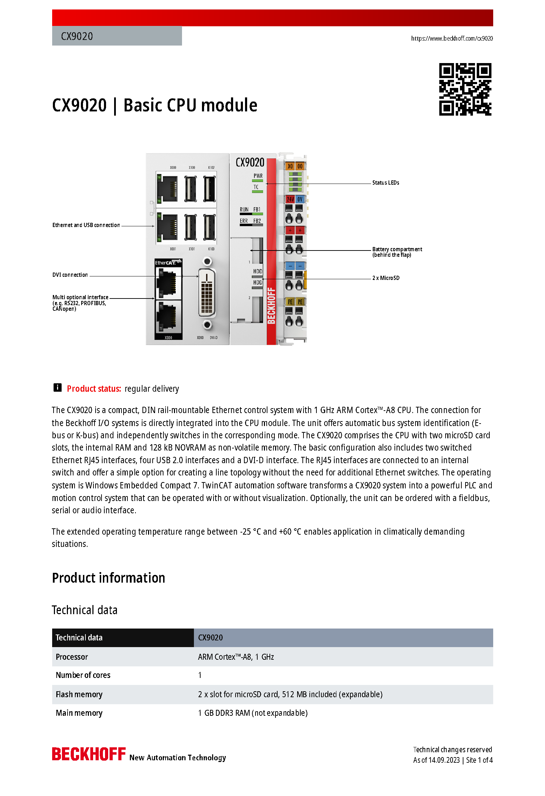
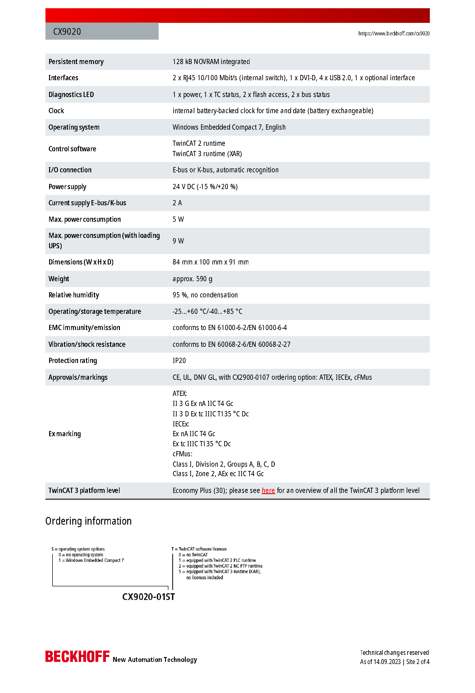
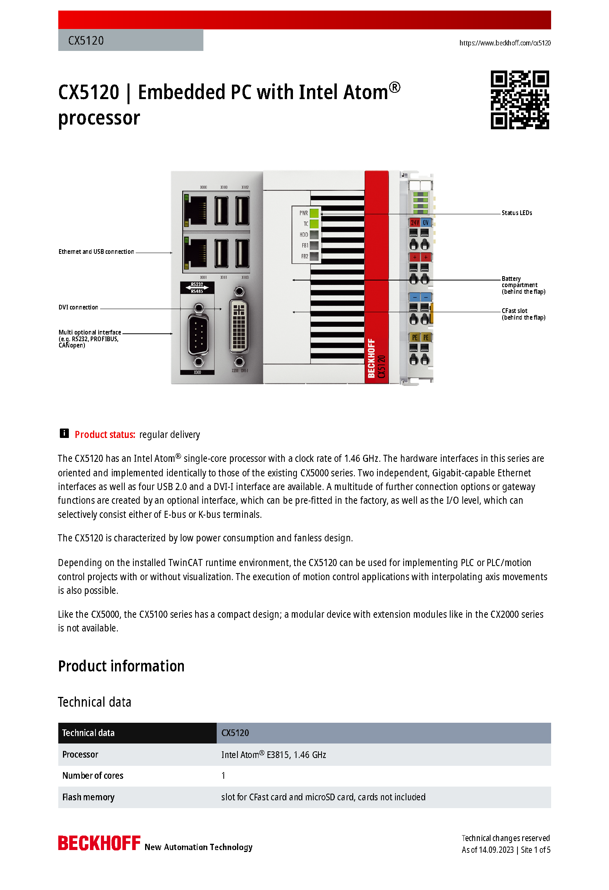
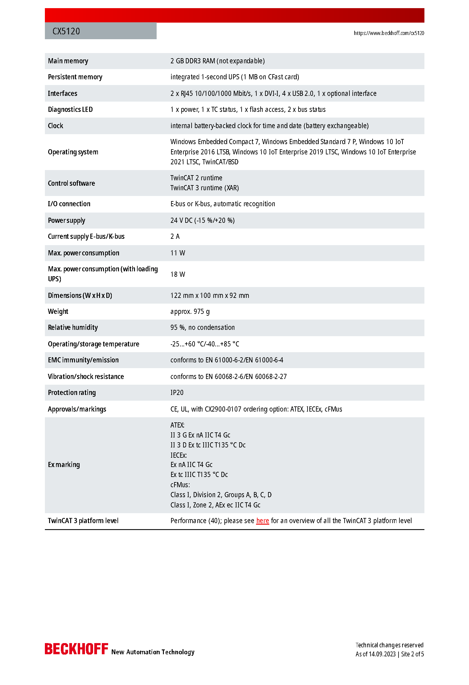
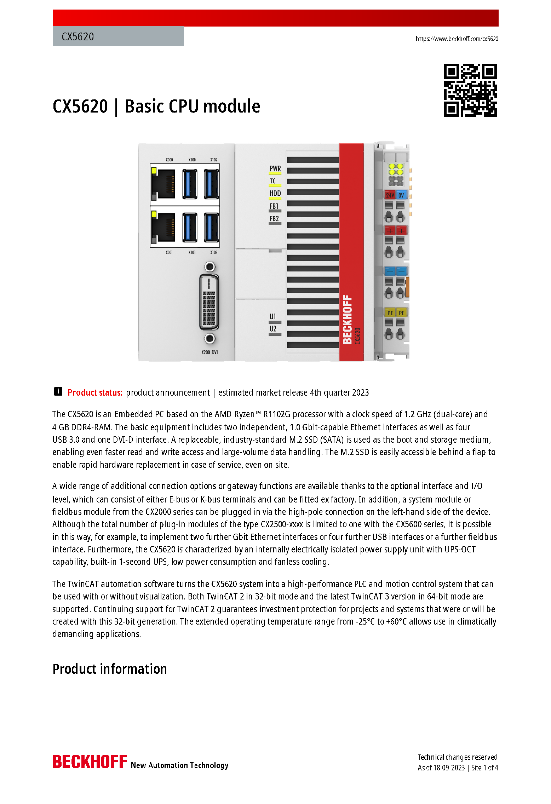
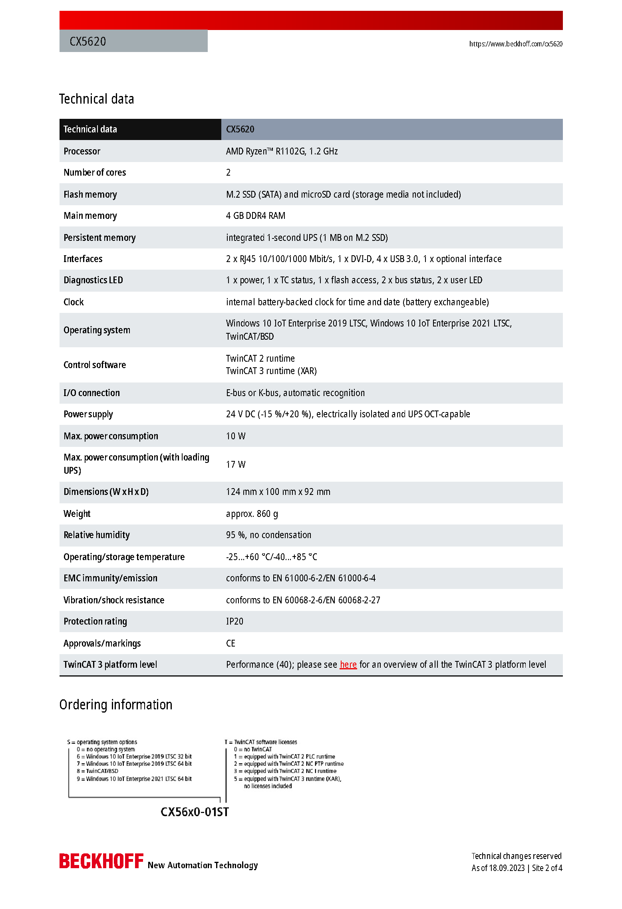

Op je stage heb je een programma geschreven in C# dat een sensor uitleest en visualiseert op een scherm met DVI aansluiting. Je hebt minstens 2 GB RAM nodig.
Je kan kiezen tussen de CX9020, de CX5120 en de CX5620. De datasheets van deze systemen kan je op de volgende pagina's terugvinden.
Bron
Beckhoff Automation, productdatasheets CX9020 en CX5120 van 14 september 2023 en
CX5620 van 18 september 2023. Hieronder staan per toestel de twee bladzijden met de
technische gegevens; wat daarop volgt zijn bestelnummers, opties en toebehoren. De volledige
datasheet staat op beckhoff.com/cx9020, beckhoff.com/cx5120 en beckhoff.com/cx5620. De drie
vragen staan achter de datasheets.

Bladzijde 1 van 4, CX9020

Bladzijde 2 van 4, CX9020

Bladzijde 1 van 5, CX5120

Bladzijde 2 van 5, CX5120

Bladzijde 1 van 4, CX5620

Bladzijde 2 van 4, CX5620
Welk(e) embedded system(s) komen in aanmerking?
De CX5120 en de CX5620. Allebei dragen ze een processor met de x64
instructieset, waar je programma in C# op draait, allebei hebben ze een DVI aansluiting, en
allebei halen ze de 2 GB: de CX5120 heeft 2 GB DDR3 en de CX5620 4 GB DDR4.
Waarom zijn er embedded systems die niet in aanmerking komen?
De CX9020 valt af, om twee redenen. Hij heeft 1 GB RAM en dat geheugen is
niet uitbreidbaar, dus de 2 GB die je nodig hebt haal je er nooit. En zijn processor is een ARM
Cortex-A8 met Windows Embedded Compact 7 erop, dus je programma in C# draait er niet zoals je
het geschreven hebt. Zijn DVI-D aansluiting is wel in orde.
Welk embedded system zou je kiezen?
Allebei zijn ze een goed antwoord, zolang je je keuze motiveert. Voor de
CX5620 pleit de ruimte: 2 GB is bij de CX5120 de ondergrens die de opgave vraagt en meteen het
plafond, want dat geheugen is niet uitbreidbaar terwijl het besturingssysteem er zelf ook een
stuk van neemt, en de CX5620 heeft 4 GB en twee kernen in plaats van een. Voor de CX5120 pleit
dat hij aan alles voldoet wat de opgave vraagt, en dat je niet betaalt voor wat je niet nodig
hebt.